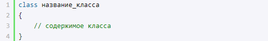
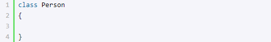
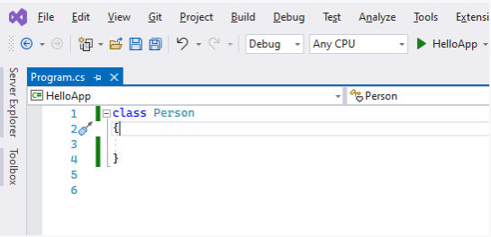

Классы
C# является полноценным объектно-ориентированным языком. Это значит, что программу на C# можно представить в виде взаимосвязанных взаимодействующих между собой объектов.
Описанием объекта является класс , а объект представляет экземпляр этого класса. Можно еще провести следующую аналогию. У нас у всех есть некоторое представление о человеке, у которого есть имя, возраст, какие-то другие характеристики. То есть некоторый шаблон - этот шаблон можно назвать классом. Конкретное воплощение этого шаблона может отличаться, например, одни люди имеют одно имя, другие - другое имя. И реально существующий человек (фактически экземпляр данного класса) будет представлять объект этого класса. В принципе ранее уже использовались классы. Например, тип string который представляет строку, фактически является классом. Или, например, класс Console, у которого метод WriteLine() выводит на консоль некоторую информацию. Теперь же посмотрим, как мы можем определять свои собственные классы. По сути класс представляет новый тип, который определяется пользователем. Класс определяется с помощью ключевого слова сlass:
После слова class идет имя класса и далее в фигурных скобках идет собственно содержимое класса. Например, определим в файле Program.cs класс Person, который будет представлять человека:
 